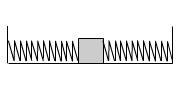
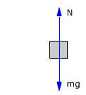

|
 |
 |
En la posición de equilibrio los muelles no están deformados. No hay fuerzas tangenciales |
El sentido de la aceleración es contrario a la elongación (Separación de la posición de equilibrio) y su módulo es proporcional a esta. Estas dos características son típicas del movimiento armónico
En Cinemática el módulo de la aceleración de un movimiento armónico vale:

(Se ha suprimido el signo menos porque se trata de un módulo)
Evidentemente el módulo de la aceleración calculada en Dinámica tiene que ser igual al módulo de la aceleración calculada en Cinemática: